トップの試作 ひらく町 v7 ・ 本番には出していません
町の閉じ(試作 v7 の比較)
社長の決定(2026-10-28)は3つです。v6 を採る。次の場面にも連続性を持たせる。方向は A、病院を出て交差の広場の見晴らしへ。閉じても病院はひらいたまま残し、閉じに本人の言葉を戻します。
成功の条件は「病院の中を見終えた人が、病院を出たあとも同じ町の中にいると感じたまま、行き先を自分で選んでページを終えられること」です。v7 は v6 の1階の後に、同じカメラで病院を出て広場の見晴らしへ引き上げ、本人の言葉・考え方の一文・行き先3つ・第29条の一文を町の中に置いて、フッターまで地と光を切らずに降ります。
- 実物はスマホで開けます(上の「v7 を開く」)。止めた画面では動きが伝わらないので、比べるときは実物でスクロールしてください
- 見た目を見比べていただくのは、「同じ位置の並び」と「v7 の連続」です。決めていただくことは4つで、ページの終わり近くにまとめました。返事が要るのは1つ目だけです
- 動く所: 1階までは v6 と同じ → 病院が1階のまま、上の札と道具の札が戻しと一緒に消える → カメラが寄ってきた道を下がりながら上がり、交差の広場の見晴らしで止まる(病院はひらいたまま)→ 「病院の外」と本人の言葉 → 明朝の一文 → 行き先の札3つと道 → 第29条の一文 → フッター
- 舞台(絵を画面に留めたまま、スクロールで場面が進む区間)は、v6 の 1.5画面に、閉じの 0.97画面を足した長さです。1階までは v6 のままで、変えていません
- 画面は Chromium の端末の模擬(393×724)とソフトウェア描画(画面を描く専用の部品を使わず、計算だけで描く方法。実機よりずっと遅い)で撮りました。iPhone・Android の実機では確かめていません。数字はすべて推定です
方向の比較(3案の絵コンテ)
designer が、病院の1階のあとの3つの方向を、同じ縮尺の絵コンテで比べました。実物の画面ではなく、絵コンテです。A は病院を出て交差の広場の見晴らしへ(同じカメラで引き上げる)、B は展望台(Compass)へ渡る、C は病院に留まり時刻が進む、です。
推したのは A です。同じカメラのまま町の全体に戻るので、病院の外でも「同じ町の中」が続き、行き先3つが町の絵の中に並びます。B は Compass が主役になり、最初の画面の主ボタンと同じ行き先が2回目に出ます。C は病院に留まる分、連続は強い一方、言葉と出口は文章だけで、分岐が絵に現れません。社長が A を選びました。
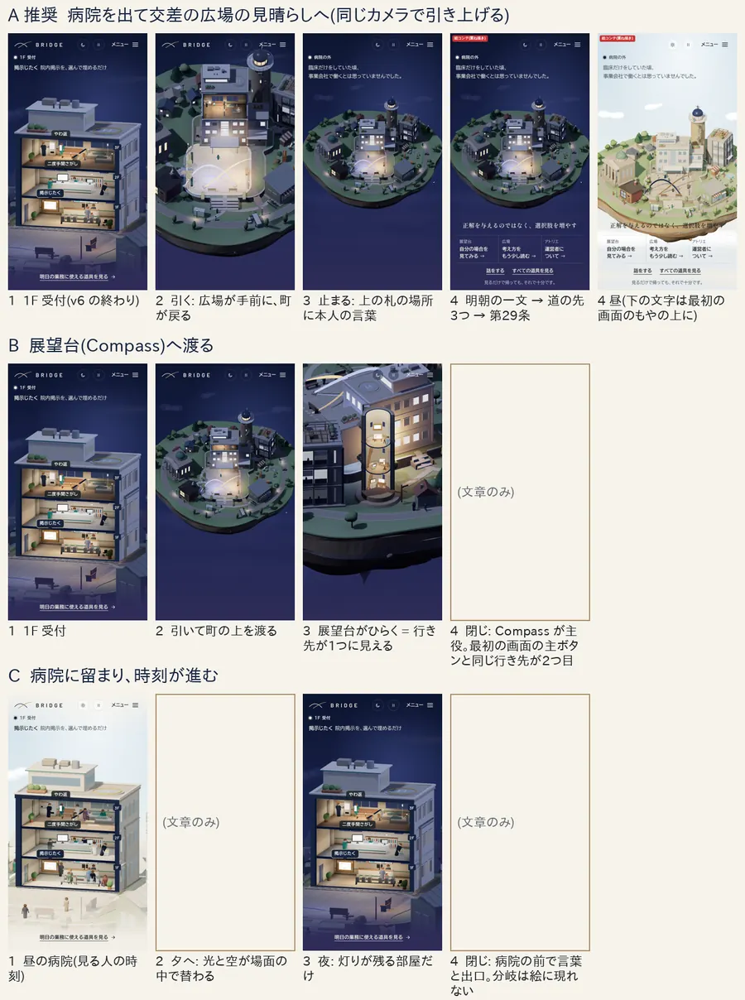
同じ位置の並び(v6 と v7)
393×724 です。左が v6、右が v7。スクロールの量が同じ所を並べました(1画面=724px)。1階までは v6 と同じ画面で、画素の差は 0 でした。その先で、v6 は舞台を抜けて試作の終わりの一文とフッターへ、v7 は同じカメラで病院を出て、広場の見晴らしの閉じからフッターへ進みます。v7 のほうが 240px 長いので、いちばん下は別の位置です。昼夕のフッターの地も、v6 は夜の色のまま、v7 は下層のフッターと同じ紙の色に降ります。
Chromium の端末の模擬とソフトウェア描画で撮影。iPhone・Android の実機では未確認
夜
1.3 画面 1階 受付(画素の差 0)

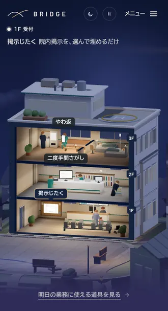
1.5 画面(v6 は舞台の終わり・v7 は札が戻しと一緒に消える)
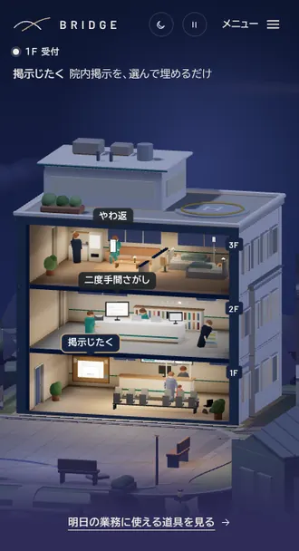
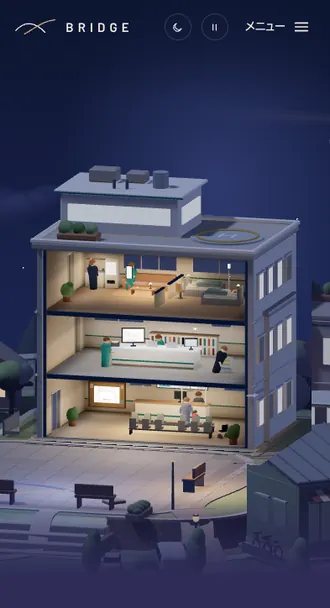
1.7 画面(v6 は舞台を抜けた所・v7 は広場の見晴らし)
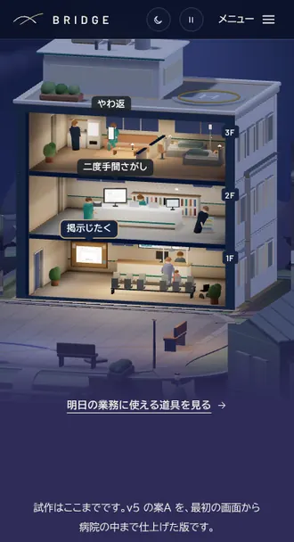
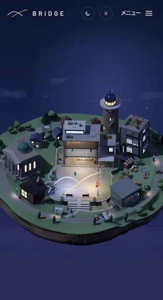
2.0 画面(v6 は試作の終わりの一文・v7 は明朝の一文)
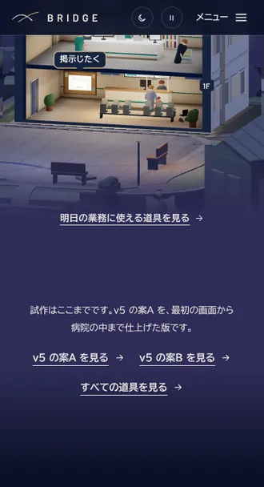
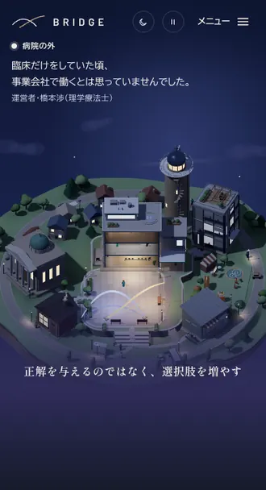
2.6 画面(v6 はフッター・v7 は道の先と第29条の一文)
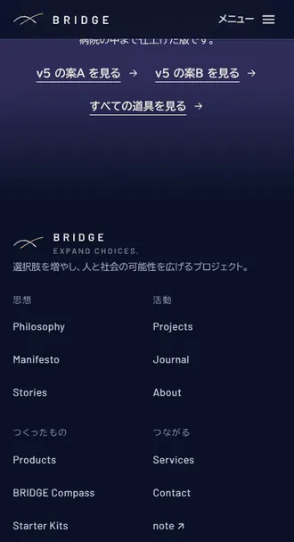
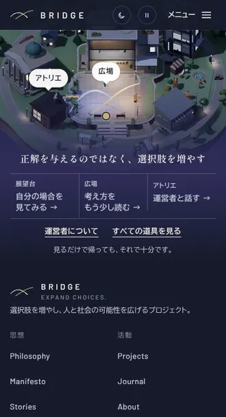
2.83 画面(v6 はページの終わり・v7 は第29条の一文のあとフッターへ)
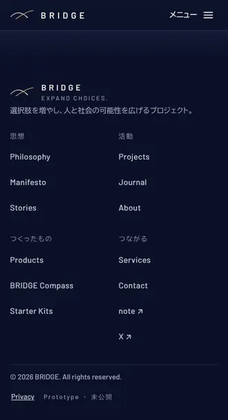
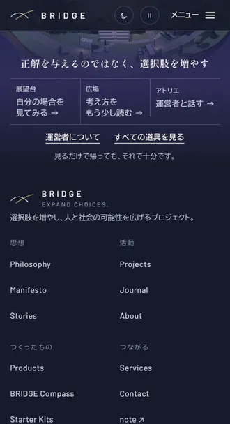
いちばん下(v6 は 2.83 画面・v7 は 3.16 画面)

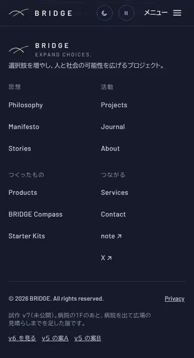
昼
1.3 画面 1階 受付(画素の差 0)
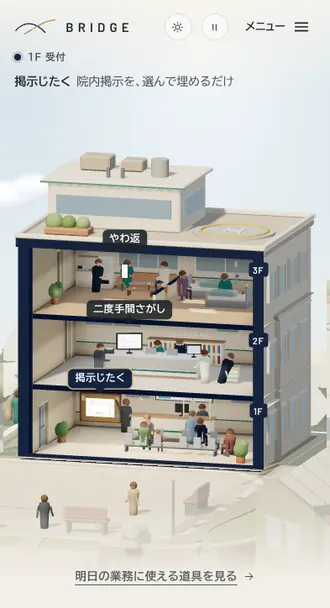

1.5 画面(v6 は舞台の終わり・v7 は札が戻しと一緒に消える)
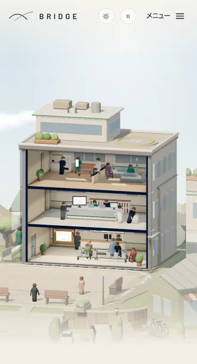
1.7 画面(v6 は舞台を抜けた所・v7 は広場の見晴らし)
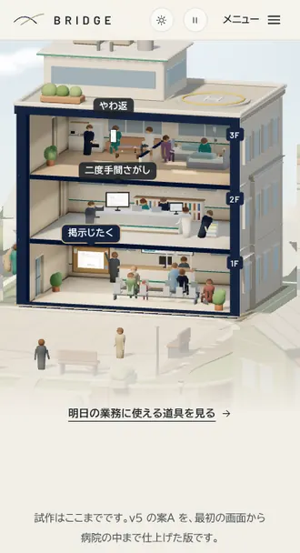
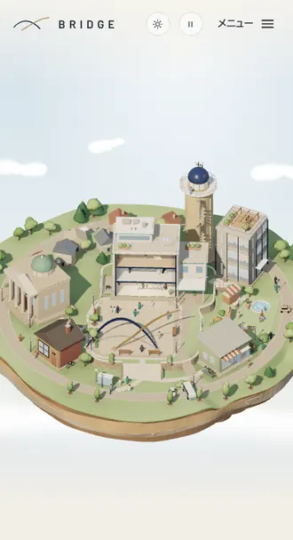
2.0 画面(v6 は試作の終わりの一文・v7 は明朝の一文)
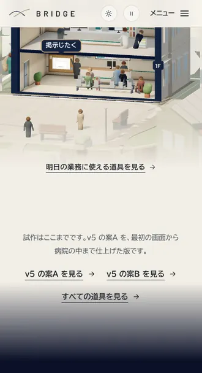
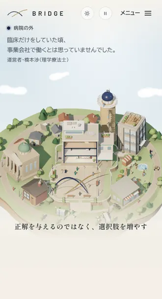
2.6 画面(v6 はフッター・v7 は道の先と第29条の一文)
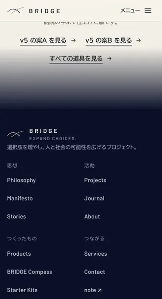
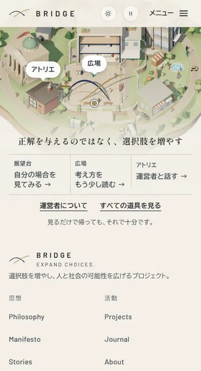
2.83 画面(v6 はページの終わり・v7 は第29条の一文のあとフッターへ)

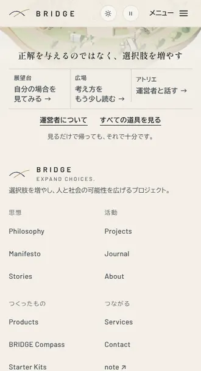
いちばん下(v6 は 2.83 画面・v7 は 3.16 画面)
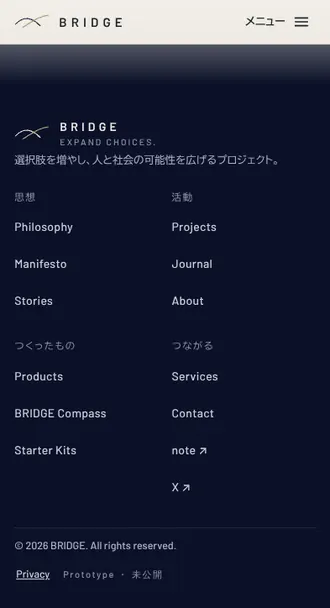
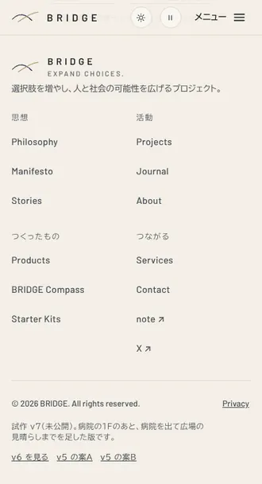
v7 の連続(夜と昼)
393×724 で、最初の画面から下りた量(画面の数)ごとに、0.1画面刻みで撮りました。横にスクロールできます。0.0〜1.5 は v6 と同じ場面で、1.6 から先が v7 で足した区間です。
Chromium の端末の模擬とソフトウェア描画で撮影。iPhone・Android の実機では未確認
夜
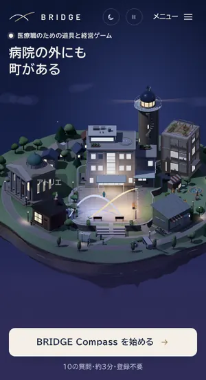
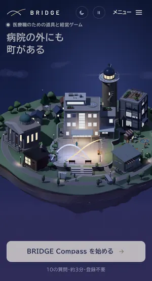
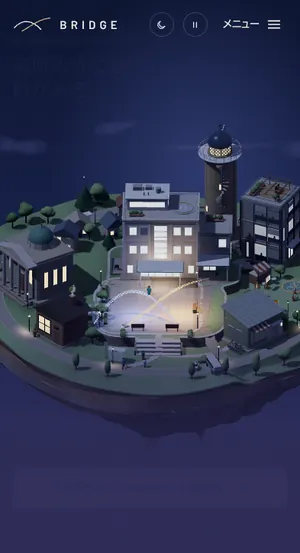
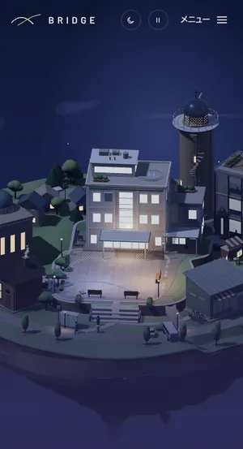
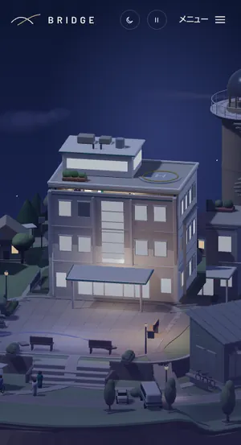
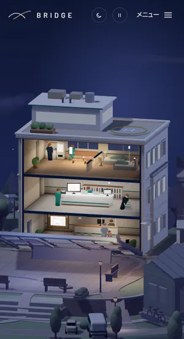
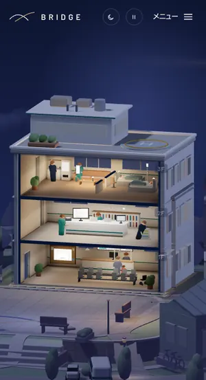
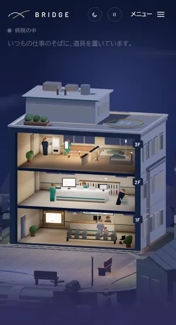
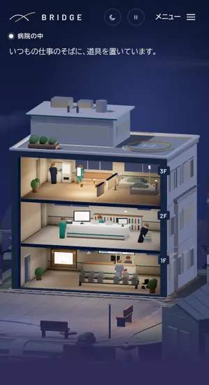
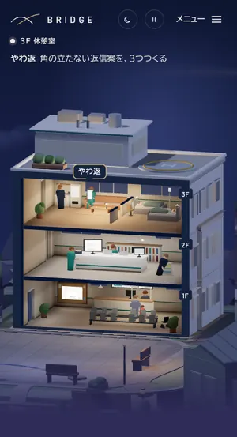
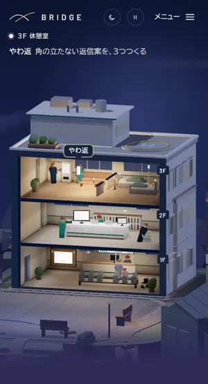
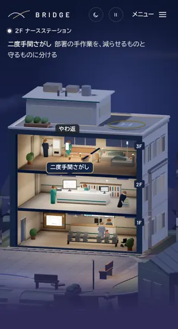
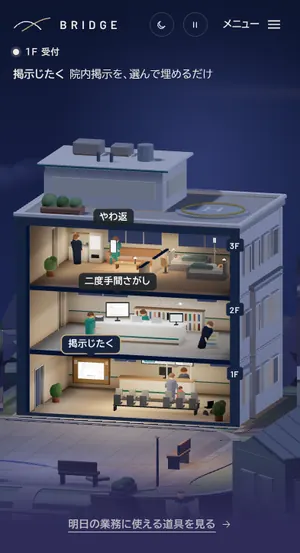
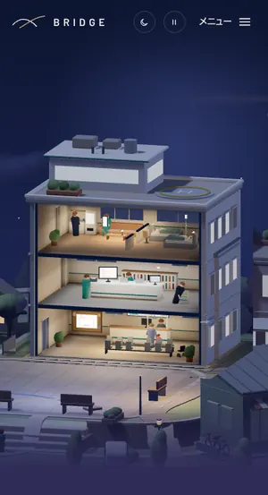
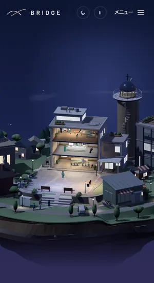
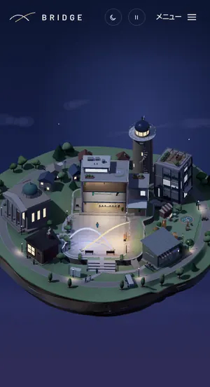
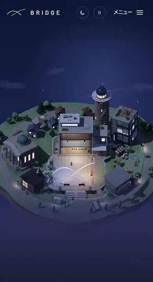
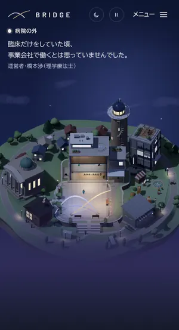
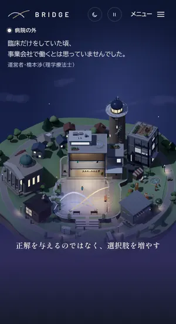
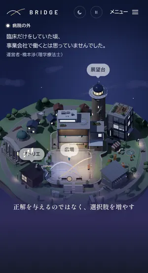
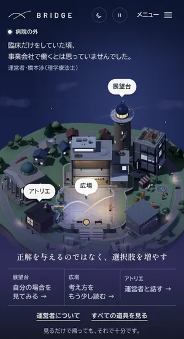
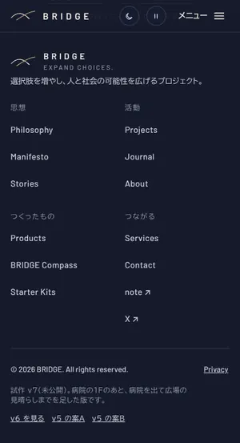
昼
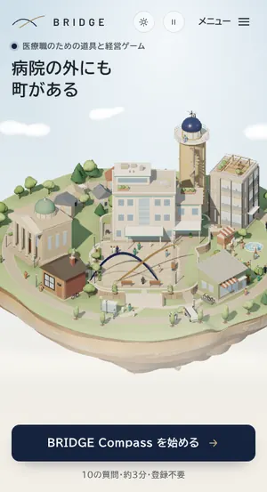
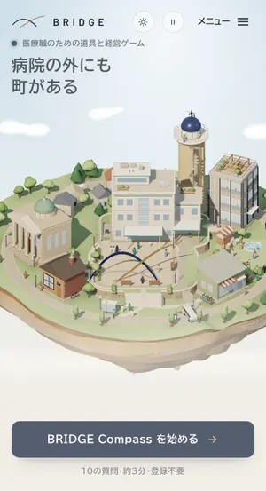
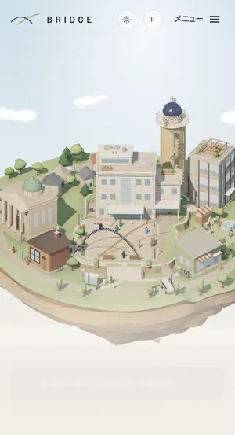
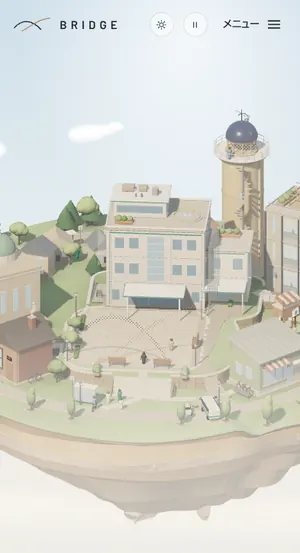
PC・背の低いスマホ・止めた画像・動きを減らす設定
どれも閉じ(舞台の終わり)の画面です。PC は 1440×900。背の低いスマホは、アドレスバーが出ている状態の大きさです(375×548 は iPhone SE などを想定)。止めた画像は、アドレスの末尾に #slow を付けたときと、とても遅い端末の見え方です。
Chromium の端末の模擬とソフトウェア描画で撮影。iPhone・Android の実機では未確認
PC 1440×900
昼
夕
夜
背の低いスマホ(閉じ)
夜 375×548・320×460
昼 375×548・320×460
止めた画像(#slow)
375×812(夕)・1024×768(夜)・1440×900(昼)
1920×1080(昼)
動きを減らす設定(393×724・夜)
スクロールの位置 800・1600・2150px
数字(v6 と同じ環境で交互に測った推定)
393×724・夜。CPU はそのままと、性能の低い端末の代わりに4倍遅くした場合を、v6 と v7 で交互に、同じ手順で測りました。すべてソフトウェア描画での推定で、実機の速さを表しません。目安は着手前に決めた数字です。届かなかったものも消さずに残しています。結果は「届いた」「届かない」「未検証」「未実施」で書きました。
| 測ったもの | 目安 | v6 | v7 | 結果 |
|---|---|---|---|---|
| 1階まで v6 との画素の差 | 0 | — | 0(止めた画像の強制で 375・1440 の 0.12〜0.84 画面も一致) | 届いた |
| カメラの切れ目 | 0 | — | 0(止めた画像に替わるのは、動きを減らす設定・#slow・WebGL なし・低性能のときだけ) | 届いた |
| 時刻・光・地の色・文字の組み方のうち2つ以上が 0.1画面以内に同時に変わる所 | 0 | — | 0(区切りの設計で判定。画素で測ったのは地の色だけ) | 届いた |
| 地の色の ΔE2000(隣どうしの最大) | v6 の舞台以下 | 夜 15.68・昼 11.81 | 夜 7.25・昼 0.56 | 届いた |
| 何も変わらない区間の最長 | 0.18画面以下 | 0.18画面 | 0.11画面 | 届いた |
| 新しい場面の長さ | 1.0画面以下 | — | 0.97画面 | 届いた |
| 393×724 でのページの全長 | 5,805px 以下 | 2,772px | 3,012px | 届いた |
| 行き先の数と関わり方 | 3つ以上・2種類以上 | — | 5つ(使う・読む・話す) | 届いた |
| 本人の言葉・第29条の一文 | 各1 | — | 各1 | 届いた |
| キーボード・JS なし・動きを減らす設定で全行き先に届く | 届く | — | 届く(道の先に Tab で来ると、舞台が閉じの終わり近くまで進む) | 届いた |
| アドレスバーの開閉(模擬) | 跳び 0・組み直し 0 | — | 進みの跳び 0・構図の作り直し 0・言葉と出口と札のずれ 0px | 届いた |
| レイアウトのずれ(CLS) | 0.01 以下 | 0.0015〜0.0069 | 0.0007〜0.0071 | 届いた |
| 1こまを描く命令の数 | 40 回以下 | — | 最大 40(1階 36・閉じ 37) | 届いた |
| 三角形の数 | v6 と同水準 | 1階 10.3万 | 1階 10.3万・閉じ 10.6万(PM の判定のあとに測った) | 届いた |
| 新しい描き方 | 0 | — | 0(灯る道は外枠の切り口と同じ描き方) | 届いた |
| 見出し → 説明 → ボタン → 画像の繰り返し | 0 | — | 0(PM の判定のあとに測った) | 届いた |
| 等倍で JS が 50ms を超えたこま(画質の段の切り替えの1こまを除く) | 0 回 | 0 回 | 0 回 | 届いた |
| 4倍で JS が 50ms を超えたこま(同上) | 0 回 | 0〜6 回 | 2〜4 回 | 届かない |
| 1こまの JS の時間の 95% の値(4倍。2回の測り) | 46ms 以下 | 41ms・79ms | 53ms・59ms | 届かない |
| iPhone Safari・Android の実機での引っかかり・アドレスバーの出入り | 引っかからない・島が跳ばない | — | 実機で見ていない | 未検証 |
| 社長の iPhone での確認(採る条件) | 引っかからない・島が跳ばない | — | まだ見ていただいていません | 未実施 |
| 低性能の端末で、途中から止めた画像に替わるとき(降格) | 絵と札が跳ばない | — | ?q=low の閉じは正しい。自然な降格は見ていない | 未検証 |
4倍の2項目は、どちらも目安に届いていません。この環境は v6 を測ったとき(v6 の比較のページ)より遅く、v6 も同じ環境で測り直した値です。そのため v6 の比較のページの数字とは合いません。v6 も同じ環境で、6こまの回と 79ms の回があります。v7 だけが悪くなったとは言えませんが、目安には届いていません。「画質の段の切り替えの1こま」は、重い端末だけで、指が止まって約1.2秒後に1回出る止まりです(v6 と同じ)。三角形と繰り返しは、PM の判定の時点では未実施でした。判定のあとに現場が測りました。
残る問題と公開前の確認事項
数字の目安に届かなかったものと、見ていないものは、消さずに残しています。
実機で確かめること
| 項目 | 模擬で分かっていること | 実機での確かめ方 | だめなときの道 |
|---|---|---|---|
| 病院から広場へ引き上げる間の引っかかり(iPhone Safari・Android の中位機) | 等倍では、JS が 50ms を超えるこまは 0。4倍では 2〜4こまで、目安の 0 に届かない。ソフトウェア描画では、実機で絵を描く速さは分からない | iPhone で、アドレスの末尾に #perf を付けて開き、舞台を3回往復する。左下に出る「こまの間隔」の 95% の値が、中央の値の2倍以下なら目安どおり。1階から引き上げる間に引っかからないかを見る | 画質の段を下げる。それでも重い端末は、止めた画像で見せる(#slow で先に見られる) |
| 閉じで、アドレスバーが出入りしても島が跳ばない | 画面の高さだけを伸び縮みさせる模擬で、進みの跳び 0・構図の作り直し 0・言葉と出口と札のずれ 0px | 引き上げる途中と閉じで、ゆっくり上下してアドレスバーを出し入れし、島が跳ばないか見る | 絵の高さを、アドレスバーが出ているときの画面の高さに固定する |
| 4倍で目安に届かない重さ | 4倍で JS が 50ms を超えるこまは v7 が 2〜4(v6 は 0〜6)、95% 値は 53/59ms(v6 は 41/79ms。目安は 46ms 以下)。この環境は v6 を測ったときより遅い | 同じ #perf の表示で、Android の中位機を含めて見る | 描き方の用意を最初のスクロールまで遅らせる。止めた画像で見せる |
| 低性能の端末で、途中から止めた画像に替わるとき(降格) | ?q=low で、閉じが正しく出ることは確かめた。遅い端末で自然に替わるときは、まだ見ていない | 古い Android などで舞台を往復し、閉じの手前や閉じで止めた画像に替わったとき、絵と札が跳ばないかを見る | 替わるときに、止めた画像を立体の地面の線に合わせてずらす |
- 1920×1080 の止めた画像で、アトリエの下半分がもやに薄く沈みます
- PC では、砂の現在地の点を出していません(画面の 70% より下、つまりもやの上には出さない、という designer の規則)。決めていただくことの④です
- 320×460 で、札「広場」「アトリエ」が島の中ほどにかかります
- 昼の灯る道は、病院の裏に隠れて短く見えます
- 町の中のロゴを広場の1か所にする直しは、本番へ移す便で行います(社長が決めました)。このページの v7 のロゴは、まだその直しの前です
- v7 は、未発効の憲法 v1.10・design-system v2.1(PR #170)の上に立ちます(明朝の一文・町の中のロゴの数・砂の点・舞台の固定)。決める順は PR #170 の後に v7 です
- そのほか未検証: スクリーンリーダーの実機、393×852・768×1024・1024×768 の夕と夜の閉じ
決めていただくこと
- v7 を採るか(推奨: 採る。designer・PM。条件は、社長の iPhone で、病院から広場へ引き上げる間に引っかからない・閉じでアドレスバーが出入りしても島が跳ばない、の2つ。決める順は PR #170 の後。但し書き: 4倍の重さの2項目は目安に届いておらず、実機で見るまで分かりません)
- 本人の言葉の下に名前を出すか(推奨: 出す。「運営者・橋本渉(理学療法士)」。本番のトップがすでに名前を出している範囲です)
- アトリエの行き先(推奨: このまま。町の中の建物はその建物の案内なので about#founder、閉じの札と道は灯った道の行き先なので community。展望台も、町では products#career、閉じでは compass)
- PC の現在地の点(推奨: 出さない。画面の 70% より下、つまりもやの上には出さない、という designer の規則に合わせます)
- 返事をいただきたいのは、いちばん上の「v7 を採るか」だけです。ほかの3つは、推奨と違うときだけ伺います
見直しと検証の経過
- designer(第1回): 要修正9点。ヘッダーのロゴをしまう規則を外す・行き先を使う/読む/話すに・札を戻しと一緒に消す・帯とフッターの地・島の札を押せるように・背の低い画面・夕の PC の点・昼の灯る道・細部。すべて直した
- designer(第2回): 合格。直す1点(PC の閉じで島を下まで使う)→ 直した。直した後は、現場が 1440×900 の昼・夕・夜で、島が切れないことを撮って確かめた
- editor(2回): 第1回は要修正1(アトリエの行き先)→ 直した。第2回は合格。本人の言葉の下の名乗りに、名前を足した
- QA(2回): 第1回は、修正後に再検査(止めた画像の閉じが PC で崩れる・320×460 で島が一文の後ろ)→ 直した。再検査は不合格なし。軽微1(狭い列で矢印が罫に触れる)→ 現場が直し、320〜1440 で罫との間が 3px 以上あることを確かめた
- PM: 合格。試作として社長に見せてよい(held)。本番には適用しない。条件は5つで、すべて入れた。① design-system の v7 の追記を、審議中の v2.1 と分けて v2.2 にする ② 判定に出した報告で抜けていた項目(カメラの切れ目・等倍の長いこま・全行き先・構図の作り直し・三角形・繰り返し)を指示書 15節に書く ③ 重さの2項目は「届かない」と書き、同じ環境の v6 の値と並べる ④ PR の QA の行に照合した人を書く(最後の直しを確かめたのは現場、新しいトークンと class の §6 の判断は designer。QA は照合していない)⑤ 決めていただく順は PR #170 の後
- このページは PM の判定のあとに作ったので、PM は見ていません